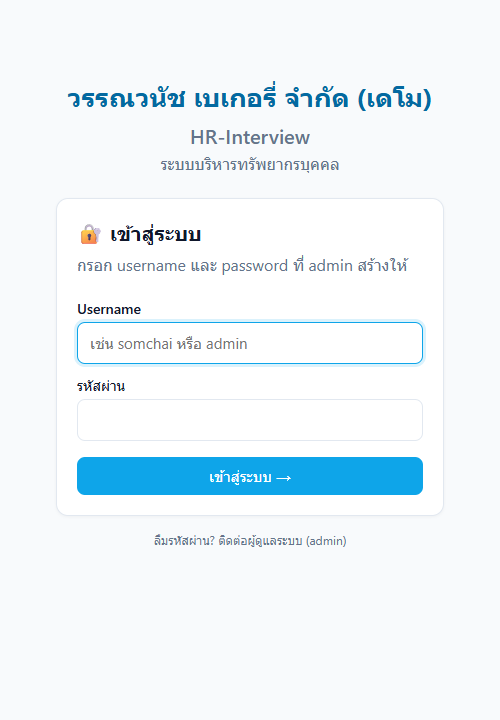
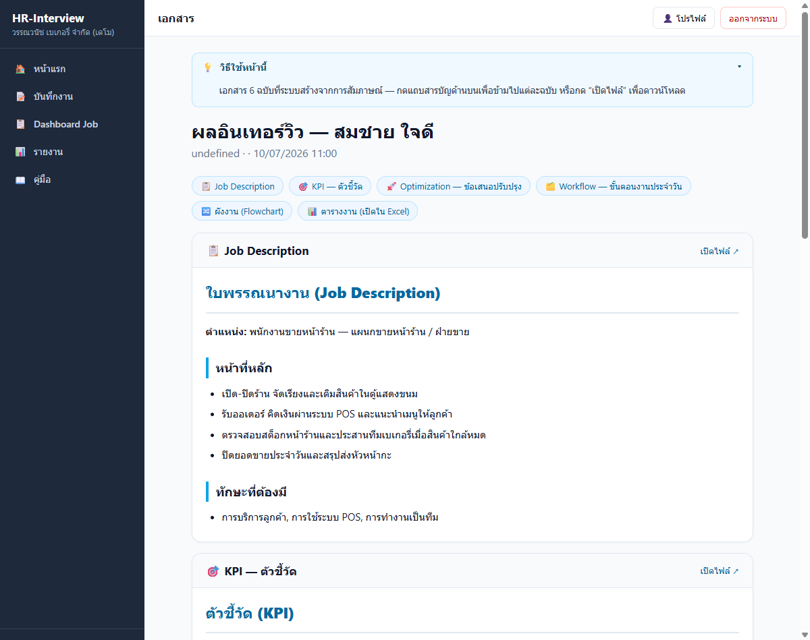
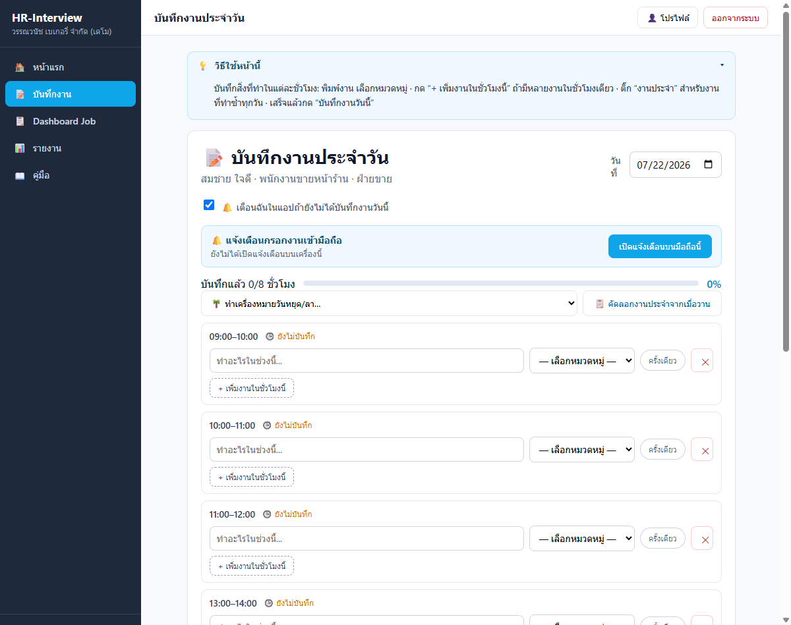
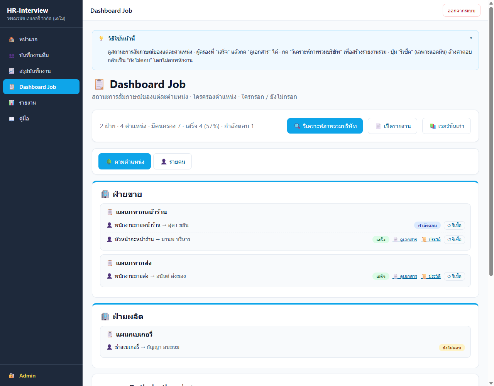
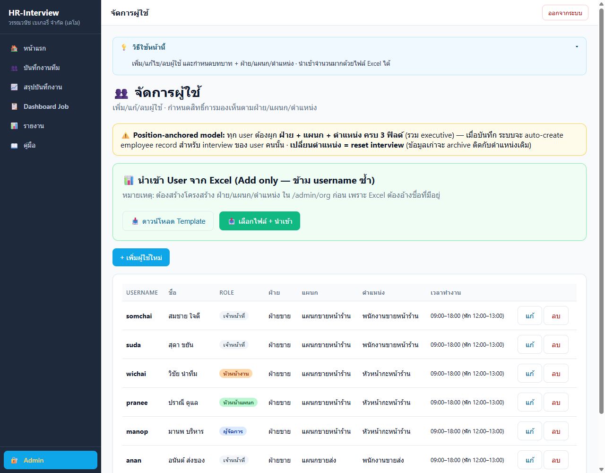
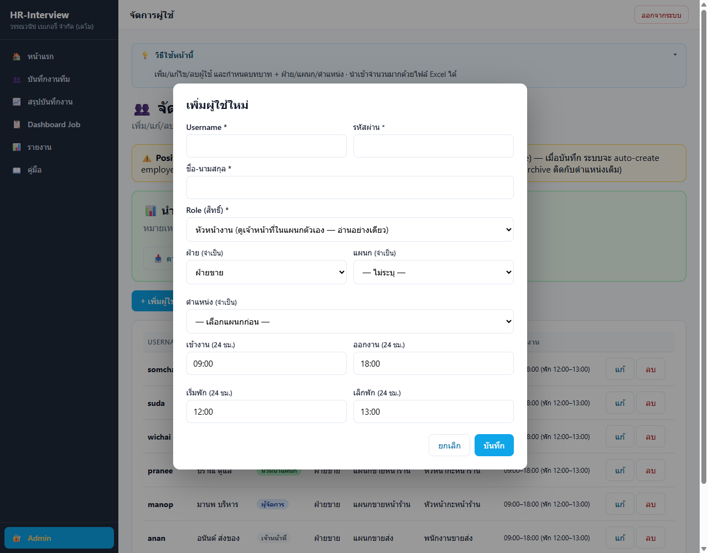
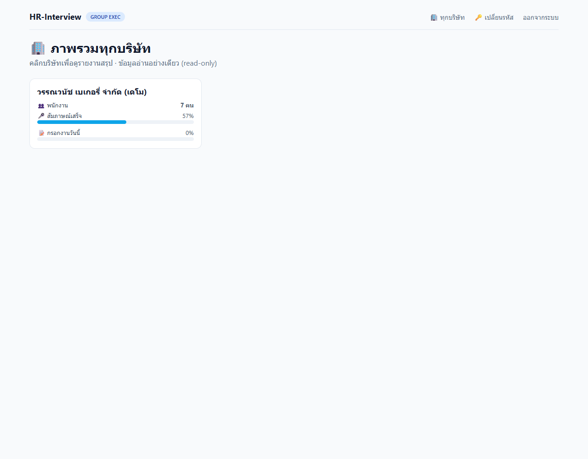
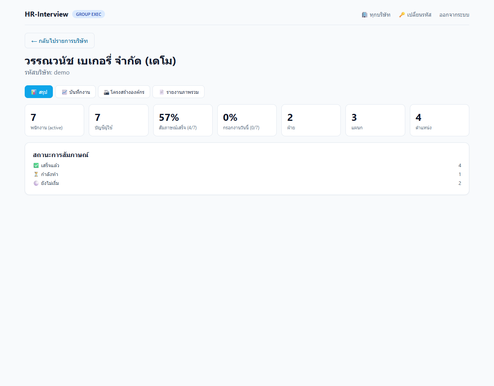
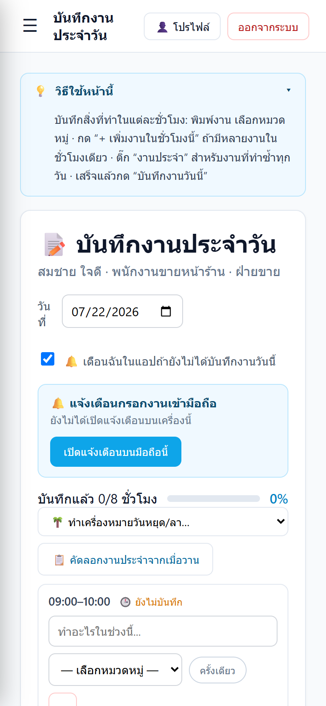

สำหรับพนักงานทุกระดับ · ใช้งานผ่านเว็บไซต์ และมือถือ
ทุกคนใช้ระบบเดียวกัน แต่ "เห็นข้อมูล" และ "ทำอะไรได้" ต่างกันตามบทบาทที่ผู้ดูแลกำหนดให้ · ทุกบทบาท ตอบสัมภาษณ์ของตัวเอง + บันทึกงานประจำวันของตัวเอง ได้เหมือนกัน ต่างกันที่ "การดูข้อมูลของคนอื่น" และ "การวิเคราะห์"
| บทบาท | เห็นข้อมูลของ | สิ่งที่ทำได้เพิ่ม |
|---|---|---|
| เจ้าหน้าที่ | ของตัวเองเท่านั้น | ตอบสัมภาษณ์ + บันทึกงานของตน |
| หัวหน้างาน | ทีมในแผนกตน (อ่านอย่างเดียว) | ดูบันทึก/สถานะของทีม — แก้ไขไม่ได้ |
| หัวหน้าแผนก | ทั้งแผนกของตน | ดู + ดูแลลูกทีมในแผนก |
| หัวหน้าฝ่าย | ทั้งฝ่ายของตน (ทุกแผนก) | ดูภาพรวมทั้งฝ่าย |
| ผู้จัดการ | ฝ่ายตน + ที่ได้รับอนุญาตเพิ่ม | ดูแลทีม + กดวิเคราะห์ภาพรวม |
| ผู้บริหาร | ทั้งบริษัท (อ่าน) | ดูภาพรวมทั้งองค์กร + วิเคราะห์ |

เป็นการ "สัมภาษณ์ตัวเอง" เกี่ยวกับงานที่ทำ เพื่อให้ระบบ AI สร้างเอกสารสรุปงานให้ (ใบพรรณนางาน / KPI / แนวทางปรับปรุง ฯลฯ) — ทุกคนต้องทำของตัวเอง 1 ครั้ง
นอกจากเอกสารรายคน ระบบยังสรุป "ภาพรวมทั้งบริษัท" ได้ (เฉพาะผู้จัดการ/ผู้บริหาร/ผู้ดูแล)

บันทึกว่าแต่ละชั่วโมงในวันนั้นทำงานอะไร — ทุกคนควรทำทุกวัน (ข้อมูลนี้ช่วยให้รายงาน/KPI แม่นยำ)

ที่หน้าบันทึกงาน จะมีเมนู "🌴 ทำเครื่องหมายวันหยุด/ลา…" ให้เลือก
| เมนู | ทำอะไร | ใครใช้ |
|---|---|---|
| Dashboard Job | ดูสถานะการสัมภาษณ์ของแต่ละตำแหน่ง · ใครกรอก/ยังไม่กรอก · เปิดดูเอกสารรายคน · ดูประวัติการวิเคราะห์ | หัวหน้าแผนกขึ้นไป |
| บันทึกงานทีม | ดูบันทึกงานประจำวันของลูกทีม (อ่านอย่างเดียว) | หัวหน้างานขึ้นไป |
| สรุปบันทึกงาน | รายงานสรุปการกรอกงานของทีม + ดาวน์โหลด CSV | หัวหน้างานขึ้นไป |
| รายงาน | ดูเอกสาร/สถานะของพนักงานในขอบเขตของตน | หัวหน้างานขึ้นไป |
| โปรไฟล์ | เปลี่ยนรหัสผ่านของตัวเอง + ตั้งเวลาเข้า-ออกงาน/พักเที่ยง | ทุกคน |
| คู่มือ | เปิดคู่มือการใช้งาน | ทุกคน |
| ออกจากระบบ | ปุ่มมุมขวาบน — กดทุกครั้งเมื่อใช้เสร็จ | ทุกคน |





ระบบนี้ติดตั้งเป็น "แอป" บนมือถือได้เลย โดยไม่ต้องโหลดจาก App Store/Play Store — แค่เพิ่มเว็บลงหน้าจอโฮม จะได้ไอคอนแอปเปิดใช้เต็มจอ + รับแจ้งเตือนได้
เปิดแล้วระบบจะเตือนเมื่อ "ถึงเวลาแต่ยังไม่ได้กรอกงาน" — เตือนเฉพาะชั่วโมงที่ผ่านไปแล้วยังไม่กรอก
